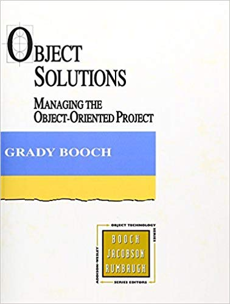
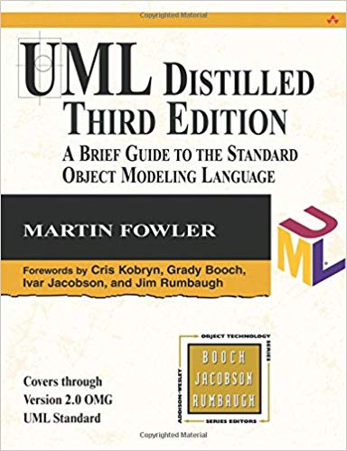

Justificación: ¿Por qué?
Conocer para dominar la naturaleza
— Humanismo
Renacimiento |
|
Definición: ¿Qué?
Pirámide DIKW
|
| Nivel | Definición | Ejemplos |
|---|---|---|
Ruido |
Señales físicas (visuales, sonoras, …) no estandarizadas, sin formar parte de un código |
ñlaksjdfk, brrrrrr, xvi, … |
Datos |
son un hecho concreto o cifras sin ningún contexto o carentes de significado. Sin nada más que los definan, estos dos elementos de datos no tienen mucho sentido. |
1650, 9,6%, $709.7 miles de millones |
Información |
Es la aplicación de un orden estructurado a los datos con el propósito de que tengan algún significado. La información es un dato que está organizado. |
1650 son los puntos de S&P, 9,6% es la desocupación y $709.7 miles de millones fue el PIB de Argentina en el 2011. |
Conocimiento |
La comprensión de un tema específico, a través de la experiencia (o educación). Normalmente se utiliza el conocimiento en términos de una habilidad o pericia personal en un área determinada. El conocimiento general refleja una comprensión empírica, más que intuitiva. Se construye por sobre la información para darnos un contexto. La diferencia clave entre el conocimiento y la información es que el conocimiento nos da poder para tomar medidas. |
Te desenvuelves en un tipo de fiesta porque la conoces |
Sabiduría |
Es el juicio óptimo, lo que refleja un profundo conocimiento de las personas, cosas, eventos o situaciones. Una persona que tiene la sabiduría puede aplicar efectivamente la percepción y el conocimiento con el fin de producir los resultados deseados. Es la comprensión de la realidad objetiva dentro de un contexto más amplio. |
Sabe divertirse en una fiesta |
Objetivos: ¿Para qué?
-
Para obtener soluciones efectivas, eficaces y eficientes, a partir de sistemas complejos mediante:
| Sector | Descripción | Actividades |
|---|---|---|
Primario |
Conformado por las actividades económicas relacionadas con la transformación de los recursos naturales en productos primarios no elaborados. Usualmente, los productos primarios son utilizados como materia prima en otros procesos de producción en las producciones industriales. |
Las principales actividades del sector primario son la agricultura, la ganadería, la silvicultura, la apicultura, la acuicultura, la caza, la pesca y piscicultura y la minería, aunque algunos consideran a la minería parte del sector industrial de las regiones. |
Secundario |
Reúne la actividad artesanal e industrial manufacturera, mediante las cuales los bienes provenientes del sector primario son transformados en nuevos productos. |
Este sector se divide en dos sub-sectores: el industrial extractivo, que son la industria minera y petrolífera, y el industrial de transformación como las actividades de envasado, embotellado, manipulación y la transformación de materias primas y/o productos semi-elaborados. |
Terciario |
Es un sector que no produce bienes, pero que es fundamental en una sociedad capitalista desarrollada. Su labor consiste en proporcionar a la población todos los productos que fabrica la industria, obtiene la agricultura e incluso el propio sector servicios |
Ofrecer servicios a la sociedad, a las personas y a las empresas, lo cual significa una gama muy amplia de actividades que está en constante aumento. Ésta abarca desde el comercio más pequeño, hasta las altas finanzas o el Estado. |
Cuaternario o de información |
Actividades relacionadas con el valor intangible de la información, abarcando la gestión y la distribución de dicha información. Este nuevo enfoque surge del concepto de sociedad de la información o sociedad del conocimiento, cuyos antecedentes se remontan al concepto de sociedad postindustrial, acuñado por Daniel Bell. |
Dentro de este sector se engloban actividades especializadas de investigación, desarrollo, innovación y divulgación (I+D+i+d) |
Quinario |
Relativo a los servicios sin ánimo de lucro |
Relacionados con la cultura, la educación, el arte y el entretenimiento. Sin embargo, las actividades incluidas en este sector varían de unos utores ta otros, incluyendo en ocasiones actividades relacionadas con la sanidad. |
Descripción: ¿Cómo?
Historia de la Ciencia
Método Científico de Galileo
|

|
Método Cartesiano
-
Principio de duda o evidencia sistemática, no aceptar como verdadero algo hasta que se compruebe con evidencia, clara y distintamente, aquello que es realmente verdadero. Con la duda sistemática, se evita la prevención y la precipitación, aceptándose como cierto lo que sea evidentemente cierto.
-
Principio del análisis o descomposición, dividir y descomponer cada dificultad o problema en tantas partes como sea posible y necesarias para su comprensión y solución y resolverlas por separado.
-
Principio de la síntesis o la composición, conducir cuidadosamente los pensamientos y razonamientos, a partir de las formas más fáciles y simples de conocer para pasar gradualmente a los más difíciles, y así ir armando pensamientos para poder probar su funcionamiento.
-
Principio de la enumeración o de la verificación, hacer verificaciones, recuentos y revisiones para asegurarse de que nada fue omitido o pasado por alto, y poder comprobar si tu evidencia es falsa o verdadera
Ciclo de Deming
-
Estrategia de mejora continua de la calidad
Dialéctica Hegeliana
La dialéctica se basa en la fundamentación de que una idea (tesis), generalmente histórica, social o filosófica, al ser desarrollada en detalle, abre aspectos diversos que entre sí se avienen mal (antítesis), pero finalmente surge una manera de reconcebirla conciliando aspectos aparentemente contradictorios (síntesis) |
Paradigmas de Khun
Paradigma: conjunto de prácticas y saberes que definen una disciplina científica durante un período específico
— Kuhn
Estructura de las Revoluciones Científicas |
-
Ejemplos:
-
Física: la física de Newton (tesis, tiempo y espacio absolutos) no explicaba sucesos en áreas específicas ( (antítesis, no se ve a Mercurio donde debería estar, …), hasta que la física de Einstein (síntesis, tiempo-espacio relativo) da una explicación general
-
Filosofía: los racionalistas (tesis, acentúa el papel de la razón en la adquisición del conocimiento de Platón, Descartes, …) frente a los empiristas (antítesis, todo conocimiento deriva de la experiencia sensible, ésta es la única fuente de conocimiento de Aristóteles, Hume, …), hasta el criticismo (síntesis, con juicios apriori de Kant)
-
Hardware: procesadores CISC (tesis, complejas instrucciones potentes), procesadores RISC (antítesis, pequeñas instrucciones paralelizables), hasta …
-
Conjuntos
-
Fundamento del conocimiento, del pensamiento, del lenguaje y de la lógica: cada concepto y cada palabra define, habla, refiere a, … un conjunto
-
Ejemplos:
-
Este es tonto! o sea pertenece al conjunto de tontos, responde a las características del Tonto (compresión) o lo has puesto tú!!! (extension)
-
"- ¿A qué hora llegas?" o sea ¿Qué elemento del conjunto horas del día marcará el reloj cuando llegues?; "- A las -25 horas!", que no pertenece al conjunto de las horas del día; "- Éste es tonto!!!" o sea no conoce el conjunto de horas del día
-
-
| Definición | Concreto | Abstracto |
|---|---|---|
Un conjunto es una colección desordenada de elementos no repetidos, asociados por algún patrón |

|
Tipos de Conjuntos
| Extensión | Compresión |
|---|---|
Colección desordenada de elementos no repetidos, asociados por extensión (aleatoriedad, capricho, …) |
Colección desordenada de elementos no repetidos, asociados por comprensión (criterio, ecuación, condición, …) con conjunto de características comunes, patrón |
Ejemplos |
Ejemplos |
las 7 maravillas del mundo antiguo: Chichén Itzá, en México; El Coliseo de Roma, en Italia; La estatua Cristo Redentor, en Brasil; La Gran Muralla China, en China; Machu Picchu, en Perú; Petra, en Jordania; El Taj Mahal, en India |
mi cuerpo es el conjunto de mis órganos, huesos, … dentro de mi piel |
mis líderes favoritos: Sócrates, Lao Tse, Buda, Jesucristo, Mahoma, … |
la humanidad es el conjunto de todas las personas |
alcaldes electos: resumen matemático, ley D`Hondt, del conjunto de caprichos, intuiciones, … de cada votante |
los números primos son el conjunto de números naturales cuyo conjunto de divisores tiene intersección vacía con el conjunto del 2 al anterior al número dado |
Tipos de Elementos
-
Un objeto es un conjunto cuyos elementos son otros objetos
-
Sinónimos: ente, cosa, archiperre, artilugio, adminículo, aparejo, pirindolo, …
-
-
Una clase es un conjunto cuyos elementos son las características comunes de otro conjunto de objetos similares
-
Sinónimos: tipo, entidad, clase, idea, …
-
| Concreto | Abstracto |
|---|---|

|
|
Recursividad
-
Recursividad: algo que se define/refiere, directa o indirectamente, sobre sí mismo
-
Vetada en el pasado por problemas con el infinito si no hay caso base:
-
Paradojas!!! Paradoja de Hércules y la Tortuga de Zenón,
-
Causa/Consecuencia … la primera causa?!?! Dios!?! Más allá!?!
-
"Prohibida" por la Filosofía de la Ciencia hasta el siglo XIX: no puedes usar el concepto en la definición
-
-
Herramienta actual potentísima para la fundamentación de la lógica, matemática, programación, …
-
Un número natural es el 0 o el sucesor de un número natural: 0 es 0, sucesor(0) es 1, sucesor(sucesor(0)) es 2, …
-
-
-
Elementos recursivos
| Condición | Concreto | Abstracto |
|---|---|---|
Los elementos de un conjunto pueden ser conjuntos de otros elementos a su vez |
Jerarquías de Composición vs Clasficación
| Jerarquía de Composición | Jerarquía de Clasificación |
|---|---|
|
|
|
|
Ejemplo: tú eres el conjunto de tus órganos que cada uno es el conjunto de tejidos que son el conjunto de células, … partículas elmentales |
Ejemplo: las personas son la unión del conjunto de las mujeres y los hombres con sus características generales, comunes, compartidas, … |
-
Elementos compartidos
| Jerarquía con Agregación | Jerarquía con Herencia Múltiple |
|---|---|
Un objeto parte pertenece a varios objetos todo |
Un clase descendiente comparte características con varias clases base |
Yo pertenezco a la familia que me crió y a la que forme cuando crecí |
Mi primo es español y francés, doble nacionalidad |
Asociación
|
Estructuras
| Estructura | Condiciones | Ejemplo |
|---|---|---|
Secuencia, lista, flujo, … |
|
|
Árbol |
|
|
Grafo, maraña, … |
|
|
Jerarquía |
|
-
Clasificación de Estructras
Estategias de Clasificación
| Objetos | Clasificación | Jerarquía de Clasificación |
|---|---|---|
-
Categorización clásica
-
Agrupación conceptual
-
Teoría de Prototipos
Categorización clásica
Todas las entidades que tienen una determinada propiedad o conjunto de propiedades en común forman una categoría(tipo/clase). Estas propiedades son necesarias y suficientes para definir la categoría
96
-
Las categorías naturales tienden a ser un poco incómodas: la mayoría de los pájaros vuelan, pero algunos no lo hacen; las sillas pueden consistir de madera, plástico o metal y pueden tener casi cualquier número de patas, dependiendo del capricho del diseñador.
-
Parece prácticamente imposible llegar a una lista de propiedades para cualquier categoría natural que excluya a todos los ejemplos que no están en la categoría e incluya todos los ejemplos que se encuentran en la categoría
-
Modelo de lenguajes de programación orientados a objetos con clases, como Java
Agrupación conceptual
Las clases se generan mediante la formulación de primeras descripciones conceptuales de estas clases y, a continuación, la clasificación de las entidades de acuerdo con las descripciones
-
Podemos afirmar un concepto como "canción de amor." Este es un concepto más que una propiedad, para la “canción de amor“-idad de cualquier canción no es algo que se pueda medir empíricamente. Sin embargo, si decidimos que una determinada canción es más una canción de amor que no, nos situamos en esta categoría. - Por lo tanto, la agrupación conceptual representa más una agrupación probabilística de objetos
-
Problemas de objetividad en conceptos con excepciones (pingüino no vuela, negros de piel blanca, …)
Teoría de Prototipos
Wittgenstein señaló que una categoría como juego no encaja en el molde clásico, ya que no hay propiedades comunes compartidos por todos los juegos. . . . Aunque no existe una única colección de propiedades que comparten todos los juegos, la categoría juego está unida por lo que Wittgenstein llama parecidos de familia. . . . Wittgenstein también observó que no había límite fijo en la categoría juego. La categoría podría extenderse y nuevos tipos de juegos ser introducidos, siempre que se parezcan a los juegos anteriores de manera apropiada
-
Una clase de objetos está representada por un objeto prototípico y un objeto se considera que es un miembro de esta clase si, y sólo si se asemeja a este prototipo de forma significativa. Nosotros agrupamos cosas de acuerdo a distintos conceptos según el grado de su relación con prototipos concretos
-
Modelo de lenguajes de programación orientados a objetos por prototipos, sin clases, como JavaScript
-
Bibliografía
| Obra, Autor y Edición | Portada | Obra, Autor y Edición | Portada |
|---|---|---|---|
|

|
|

|
|

|
|
|
|

|
|

|
|

|
|

|
|

|
|

|